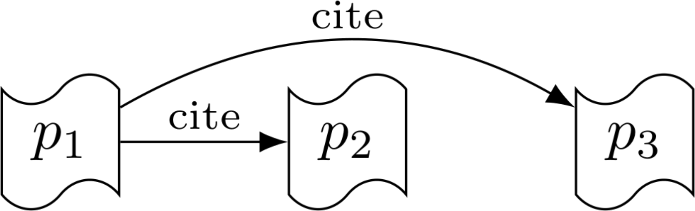
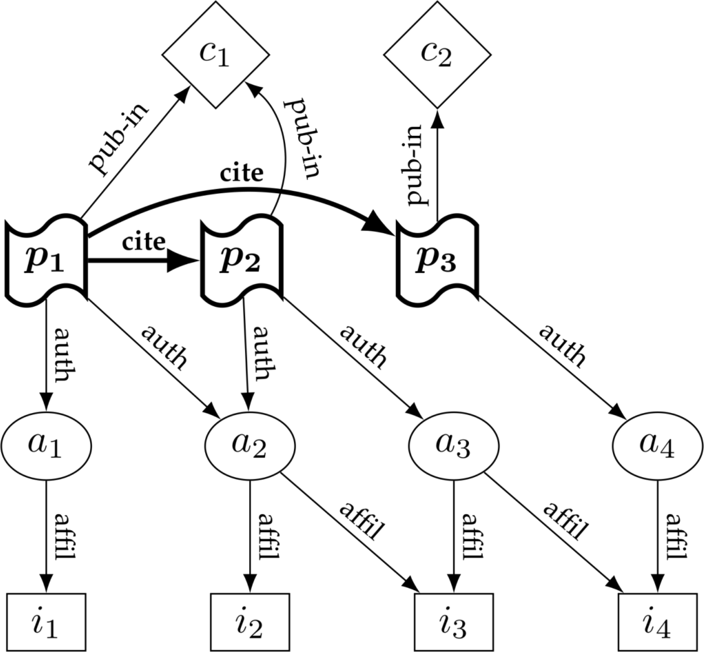
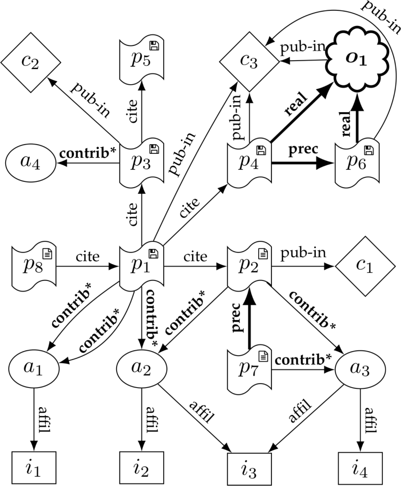

Impact of dependencies in research software
Colloquium,
Dept. of Computer Science, Humboldt-Universität zu Berlin, 2019-12-10
Stephan Druskat
Aim
Aim of the dissertation
Metric of impact of dependencies in research software as a definition of contribution to software for citation.
Software citation
Background
- Digitalization: software is eating research ···ᗤ
- Software as a research product
- Research software citation [1], e.g.:
- Importance of software
- Credit and attribution of software
- Credit for software work = research work, research evaluations, careers, etc.
- Implementation of software citation? [2]
Citation
- Sociotechnical system
- Functions:
- context function
- social functions (trust, authority, credit, evaluation)
- compliance function
- discursive function
- reproducibility function
Citation and software
- Integration of software in the citation system
- Software-specific (vs. papers) & general challenges:
- seriality, versions, concepts
- identification
- dynamicity & staticity
- references in software?
- contribution types
Research citation graphs
Modeling the citation system
Context function
- Citation between products: \(G = (V,E)\)
- \(V\) = research products
- \(E\) =
citerelations (\(p_1 \in V\) and \(p_2 \in V\) and \((v_1, v_2) \in E\))

Current model
Social functions
(trust & authority, credit, (evaluation))
\(\mathcal{V} = \{P,A,I,C\}\) in \(G_2 = (V, E)\)
- Research products
- Authors
- Affiliations
- Containers
affil,auth,pub-in,cite

Improved model
Compliance, reproducibility, discursivity
\(\mathcal{V} = \{P,A,I,C,O\}\) in \(G_3 = (V, E)\)
- Research products
- Authors
- Affiliations
- Containers
- Concepts
affil,contrib*,pub-in,cite,real,prec

Applications
- Citation tracking & analysis
- Contribution role analysis
- Software development practices
- Credit for “hidden” research contributions
- Transitive credit
Challenges
- Cultural challenges
- Software publication practice
- Metadata
(Transitive) impact of dependencies
Research questions
- Improved citation model including software (dependencies)
- Discursivity & compliance functions: define contributions
- Application: transitive credit
RQ1: How to define the contribution of dependencies to a software?
RQ2: How to measure the contribution of dependencies to a software?
Transitive credit
D. Katz, “Transitive Credit as a Means to Address Social and Technological Concerns Stemming from Citation and Attribution of Digital Products” [3]
- Requirements for robust citation of digital products:
- register products & creditable contributions
- track usage
- Define fractional credit for all contributions (RQ)
- Credit maps feed into downstream maps
- Tracking into future → credit for software work
Method
- Define & retrieve a gold standard dataset of research software
- Build a larger dataset of research software in Python from GitHub
- Define the impact metric
- Retrieve metrics for dataset
- Evaluate metric & measurement implementation
Impact of dependencies on research software
- Why impact?
Authority of authors?LOC?Gameable metrics (stars, downloads, forks)?
- Why measure programmatically?
- Imprecise & expensive manual definition (“haggling”)
- What is “impact”?
- Frequency? Complexity? Efficiency?
Questions?
stephan.druskat@hu-berlin.de
Twitter: @stdruskat
ORCiD 0000-0003-4925-7248
Appendix
Digression: research software classification
- RQ3: How can we classify software as research software?
- Mining software repositories
- Simple attribute tests
- Topic modeling
- Machine learning
Software publication
- Lack of practice of research software publication
- Metadata
- Unique identification
- Software papers
- Necessary evil
- To be cited in addition to software [1]
Metadata
- Provision of metadata
- By creators
CITATION.cff- Challenge: automation
- Metadata processing
- Ingestion by registries/indexers
- Challenge: uptake
PID graph
- Possible implementation of research citation graphs
- project-freya.eu/en/blogs/blogs/the-pid-graph
Why another metric?
- Culture around papers publishing
- (Hopefully) more objective metric
- Not gameable (within reason)
References
[1] Arfon M. Smith, Daniel S. Katz, Kyle E. Niemeyer, and FORCE11 Software Citation Working Group, “Software citation principles,” PeerJ Computer Science, vol. 2, no. e86, 2016 [Online]. Available: https://doi.org/10.7717/peerj-cs.86.
[2] Stephan Druskat, “Software and Dependencies in Research Citation Graphs,” Computing in Science and Engineering, pp. 1–1, 2019 [Online]. Available: https://doi.org/10.1109/MCSE.2019.2952840.
[3] Daniel Katz, “Transitive Credit as a Means to Address Social and Technological Concerns Stemming from Citation and Attribution of Digital Products,” Journal of Open Research Software, vol. 2, no. 1, p. e20, Jul. 2014 [Online]. Available: http://doi.org/10.5334/jors.be.